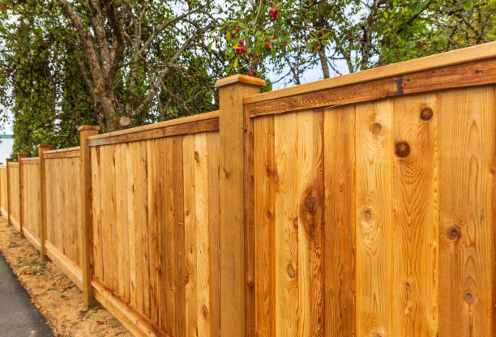

USA - Nationwide
info@superiorfenceandrail.pro
USA - Nationwide
info@superiorfenceandrail.pro

Secure your property affordably with our chain-link fence installation . Designed for strength and longevity, it's the ideal option for residential and commercial needs!
Choose our chain-link fence installation for a cost-effective solution. Ideal for security and visibility, this durable option enhances safety for residential and commercial properties in Usa - Nationwide.
Residential & commercial Fences
Quality services at affordable prices
Immediate 24/ 7 emergency services


In an increasingly connected world, privacy has become a priority for homeowners . A privacy fence acts as a serene shield, allowing you to enjoy your outdoor space without concerns about prying eyes. Our expert installation services ensure your privacy fence is not only functional but also aesthetically pleasing. We utilize high-quality materials such as wood, vinyl, and composite options that promise durability and style, perfectly catering to the unique climate and aesthetic preferences of Usa - Nationwide. With our dedicated team, we handle everything from planning to installation, ensuring a seamless process that honors your property lines and local regulations. Choose us for our attention to detail, customer service, and experience that guarantees complete satisfaction with your new privacy fence.

Wooden fences have an exquisite charm that can enhance the curb appeal of any residential or commercial property. However, like any outdoor structure, wooden fences can succumb to the elements, leading to deterioration over time. At Fences, we provide expert wooden fence repair and installation services tailored to meet the diverse needs of our Usa - Nationwide clientele.
Our team of seasoned professionals understands the nuances of wooden fence installation. We work efficiently to ensure your new fence not only looks stunning but also stands the test of time. We offer a wide variety of styles and finishes, allowing you to customize your fence to fit your specific tastes and surrounding landscape.
In the event of damage, our wooden fence repair services will restore your fence's integrity and beauty. Whether it’s fixing damaged boards, replacing posts, or addressing rot and insect infestations, we apply effective techniques to bring your fence back to life. We use high-quality materials and provide solutions that not only resolve immediate issues but also prevent future problems.
Why choose Fences for your wooden fence needs in Usa - Nationwide? Our commitment to excellence and customer satisfaction is unmatched. We recognize that each project is unique, and we approach every job with personalized attention. Our transparent pricing model ensures no hidden fees, giving you peace of mind.
Don't let a damaged fence detract from your property. Our dedicated team will help you choose the right wood type and design that aligns with your budget and vision. With our experience and dedication to quality workmanship, we guarantee that your wooden fence will be a stunning addition to your property. Choose us for professional, reliable wooden fence repair and installation services in Usa - Nationwide—your satisfaction is our priority.

Vinyl fencing has quickly become a popular choice among homeowners due to its low-maintenance and durability. Unlike wood, vinyl does not warp, rot, or require painting, making it an attractive option for long-term use. Our vinyl fencing services include expert installation and repair, ensuring that your fence not only looks great but also remains functional over the years. Available in various colors and designs, vinyl fences can enhance the beauty and value of your property while providing the required privacy and security. Choose us for our commitment to quality, variety, and exceptional customer service, making your vinyl fence installation a seamless experience.

Elevate your property’s charm with decorative aluminum fencing. This modern fencing solution combines elegance with long-lasting durability. At Fences, we offer a wide range of decorative aluminum fencing options, perfect for enhancing gardens, pools, and yards . With a variety of styles and colors available, our aluminum fences not only provide security but also add a touch of sophistication to your outdoor spaces.
One of the greatest benefits of aluminum fencing is its low maintenance requirements. Unlike traditional fences, aluminum does not rust, ensuring that your gate and fence maintain their aesthetic appeal without intensive upkeep. Our expert team is here to guide you from initial consultation to installation, ensuring that your decorative aluminum fence meets your expectations. Choose Fences for the best in decorative aluminum fencing solutions, and watch as we transform your property into a stylish oasis.

The quintessential symbol of home and warmth, picket fences are a beloved choice for many homeowners in Usa - Nationwide. At Fences, we specialize in picket fence installation that beautifully frames your property while providing the charm it deserves. Whether you are looking for classic white pickets or more modern designs and finishes, our team can bring your vision to life.
Picket fences are perfect for delineating your yard while maintaining an open feel. They enhance curb appeal and serve as functional barriers for pets and children. Using only the highest quality materials, we ensure that your picket fence is not only attractive but also durable and long-lasting. Our installation process is efficient and careful, respecting your space while delivering exceptional results. When you choose Fences for picket fence installation you’re choosing a team committed to quality and customer satisfaction.

Split rail fencing is a rustic and attractive option for homeowners seeking a more beautiful way to define their property boundaries. At Fences, we specialize in split rail fencing, providing a charming way to blend functionality with landscape aesthetics. This style of fencing is ideal for larger properties or homes located in more rural areas of Usa - Nationwide, offering a classic countryside appeal.
Our split rail fences are made from the finest wood materials, ensuring resilience against the elements while providing minimal obstruction to your views. Installation is handled by our skilled team, who take care to position the rails securely for safety and stability. Unlike traditional fencing options, split rail allows you to maintain openness while still marking your property line clearly. Trust Fences for your split rail fencing needs and let us help you create the rustic retreat you’ve always wanted.

Maintaining the appearance and longevity of your fence is crucial for aesthetic and safety reasons. Our fence staining and maintenance services in Usa - Nationwide specialize in keeping both wood and vinyl fences in pristine condition. Regular maintenance not only enhances the visual appeal of your property but also prolongs the life of your fence. We use environmentally friendly stains and sealants that protect against UV rays, moisture, and wear. Our skilled professionals provide detailed inspections and recommendations to ensure your fence stays functional and beautiful year-round. Trust us to be your partners in fence care for a property that impresses.

Keeping your loved ones safe is a top priority, especially when it comes to pool areas. At Fences, we specialize in pool safety fence installation, creating secure barriers that protect children and pets from accidental drownings while complementing your outdoor space aesthetically. Our pool fences are designed to adhere to local safety regulations, ensuring peace of mind for your family.
We offer various materials and designs, from mesh fences that blend seamlessly into your backyard to decorative aluminum options that provide both safety and style. The installation process is straightforward; our professional team will ensure that your pool safety fence is secure, effectively keeping your pool area safe without sacrificing beauty. Choose Fences for your pool safety fence needs and enjoy a safe, beautiful environment for your family and friends.

Keeping your pets safe and secure is a top priority for any responsible pet owner. At Fences, we provide professional pet containment fencing solutions that ensure your furry friends can play freely without the worry of wandering off or becoming exposed to external dangers.
Our pet containment systems include a variety of fence types suitable for different pet sizes and behaviors, from traditional wooden and vinyl fences to specialized invisible fencing systems. We work closely with you to design a containment solution that fits your yard and meets your pets' specific needs.
Choosing our services means ensuring the safety of your pets while maintaining the aesthetics of your property. Our expert installation and ongoing support ensure your pet containment fence is functional and reliable.
Join countless satisfied customers in Usa - Nationwide who have trusted Fences to create a safe environment for their beloved animals. Our dedication to quality, design, and customer care makes us the go-to choice for pet containment solutions.

In today’s world, the security of your business premises is of utmost importance. Security fencing provides a physical barrier that deters potential intruders and protects your assets. At Fences, we offer comprehensive security fencing solutions for businesses across Usa - Nationwide, tailored to meet the needs of various commercial applications.
Our security fencing options are designed to withstand impacts and resist tampering, providing an added layer of protection for your business. We offer various materials, including chain-link, ornamental steel, and barbed wire, allowing you to choose the best solution that fits your specific security needs while maintaining an attractive appearance.
Our expert installation team is dedicated to providing high-quality workmanship, ensuring your fencing is installed for maximum effectiveness. We understand that every business has unique security requirements, and our team will collaborate closely with you to assess your needs and recommend the most appropriate fencing solution.
What sets Fences apart from other fencing contractors is our commitment to client satisfaction and our extensive experience in the industry. We prioritize clear communication throughout the installation process, ensuring you are informed about the timeline, pricing, and any challenges we might encounter.
Choosing our security fencing services means investing in the protection and peace of mind that your business deserves. We understand the importance of securing your premises, and our high standards of quality and customer service reflect our dedication to helping you achieve your security goals .
Protect your business today with a tailored security fencing solution by Fences. Together, we can create a secure environment for your operations and enhance the safety of your assets.

Industrial properties require heavy-duty fencing that can withstand the demands of the environment. Our industrial chain-link fence installation services specialize in creating secure boundaries for warehouses, factories, and manufacturing facilities. We understand the unique needs of industrial sites, and our fences are designed to provide maximum security while allowing for visibility and airflow. Available in various heights and configurations, our chain-link fences can be customized to meet your specific requirements. Choose our experienced team for reliable service, quality materials, and installations that exceed industry standards.

Keeping construction sites secure and safe is essential for both workers and the public. Our temporary fencing services in Usa - Nationwide offer effective and easily deployable solutions designed for construction and event management. Our fences are sturdy yet lightweight, making them easy to install and remove as needed. They provide clear boundaries, deter unauthorized access, and enhance safety on-site. With customizable options, we can cater to different project scales and durations, ensuring you get the perfect fit for your needs. Trust our team for efficient service and quality materials that ensure your construction site is well-protected.

For businesses seeking a balance between security and aesthetic appeal, commercial aluminum fencing is the ideal solution. It offers durability and elegance, making it suitable for various commercial applications, from retail spaces to office complexes. At Fences, we specialize in commercial aluminum fencing in Usa - Nationwide, providing top-quality solutions tailored to your specific needs.
Aluminum fencing is lightweight yet strong, making it an excellent choice for security without compromising visibility or style. Our commercial-grade aluminum fences are resistant to rust and corrosion, ensuring a long-lasting installation that requires minimal maintenance. Available in various heights, colors, and styles, we can customize your fencing to match the architecture of your business premises.
Our installation team is well-trained and experienced, ensuring that your commercial aluminum fence is installed correctly and efficiently. We adhere to all local regulations, guaranteeing that your fencing solution not only meets your security needs but also complies with necessary codes.
What sets Fences apart in Usa - Nationwide is our unwavering commitment to customer satisfaction and quality workmanship. We understand that each business has unique requirements, which is why we take a personalized approach to every project. Our transparent pricing model ensures you are informed every step of the way, with no hidden costs.
By choosing our commercial aluminum fencing services, you are making a long-term investment in the security and appeal of your property. Enjoy the perfect blend of functionality and elegance with our high-quality aluminum fencing solutions at Fences.

In an increasingly security-conscious world, effective access control and gate systems are vital for protecting residential and commercial properties. These systems provide a barrier against unauthorized individuals while offering convenience for authorized users. At Fences, we specialize in cutting-edge access control and gate systems installation ensuring your property remains secure yet accessible.
Our range of access control solutions includes automated gates, key card readers, intercom systems, and more. We work with state-of-the-art technology to provide you with customizable options that meet your security needs. Whether you require a simple manual gate or a sophisticated electronic access control system, our team can design and install a solution that fits perfectly with your property.
The importance of professional installation cannot be overstated. Our experienced technicians ensure that your access control and gate systems are installed correctly, providing you with seamless integration for both security and convenience. We consider site conditions and your specific requirements to deliver a solution that works flawlessly.
Choosing Fences means opting for a partner dedicated to your security needs. Our commitment to customer service and satisfaction drives us to provide tailored solutions that exceed your expectations. We take the time to understand your needs, delivering clear communication throughout the project and ensuring you are completely satisfied with the results.
Enhance the security of your property with superior access control and gate systems from Fences. Let us help you create a safe and secure environment in Usa - Nationwide—contact us today to learn more about our services and schedule a consultation.

For properties requiring an additional layer of security, barbed wire fencing is an effective deterrent against intrusion. Commonly used in industrial, agricultural, and commercial applications, this type of fencing combines security with affordability. At Fences, we specialize in barbed wire fence installation in Usa - Nationwide, providing tailored solutions that cater to your specific security needs.
Barbed wire fencing is designed to provide a strong protective barrier, discouraging unauthorized entry. We use high-quality materials and expert installation techniques to ensure your barbed wire fence not only looks professional but is also built to withstand the elements.
Our team understands the importance of compliance with local regulations when it comes to barbed wire installation. We ensure that your fence adheres to all requirements while providing the security you need. Additionally, we can work with you to determine the appropriate height and configuration to suit your specific environment.
What sets Fences apart in Usa - Nationwide is our commitment to quality and exceptional customer service. We prioritize your satisfaction, taking the time to understand your security needs and providing solutions that best fit your property. Our transparent pricing model ensures no hidden fees, giving you confidence in your investment.
Choosing our barbed wire fence installation means you can rest easy, knowing that you have taken a proactive approach to securing your property. With years of experience, Fences is the trusted choice for barbed wire fencing solutions . Contact us today to learn more and schedule your installation.

In a competitive business environment, privacy can be essential for your success. Our commercial privacy fencing services in Usa - Nationwide create secure environments that shield your business operations from view. Whether you need a solid wood fence or a vinyl option, we provide various styles designed to enhance privacy while adding sophistication to your property. Our team is experienced in handling installations that not only meet local codes but also respect the aesthetics of the surrounding area. Trust our commitment to quality and customer satisfaction in providing customized solutions for your commercial fencing needs.

Security is a significant concern for both residential and commercial properties, and an anti-climb fence is an effective solution for safeguarding your premises. At Fences, we specialize in anti-climb fence installation that acts as a robust security barrier while offering peace of mind.
Our anti-climb fences are designed with specific features that prevent unauthorized access, including pointed tops and closely spaced pickets. We assess your security needs carefully and provide a tailored approach that fits with your landscape and architectural style. With our professional installation team, you can trust that your anti-climb fence will not only deter intruders but also enhance the overall look of your property. Choose Fences for anti-climb fencing and protect what matters most to you.

For industrial facilities, perimeter fencing is essential for security, safety, and asset protection. A well-constructed perimeter fence defines the boundaries of your property while deterring unauthorized access. At Fences, we specialize in perimeter fencing for industrial facilities offering fencing solutions that stand the test of time.
We understand the unique challenges faced by industrial facilities, and our perimeter fencing is designed to provide a robust barrier that enhances security without compromising accessibility. Our selection includes chain-link, welded wire, and barbed wire fencing, ensuring you find an ideal solution tailored to your facility's specific demands.
Our professional installation team pays meticulous attention to detail, ensuring that every fence is installed securely and adheres to local regulations. We consider factors such as site conditions, potential hazards, and security requirements during the installation process to deliver a durable and effective perimeter fencing solution.
What differentiates Fences is our unwavering commitment to quality and customer satisfaction. We work closely with you to understand your unique needs, providing personalized service that guarantees the best outcome. Our transparent pricing model means no hidden fees, allowing for budgeting clarity.
Investing in perimeter fencing is a crucial step in protecting your industrial facility. With Fences, you can count on high-quality materials and expert craftsmanship for perimeter fencing that meets the standards of your industry. Contact us today to discuss your perimeter fencing needs and secure your facility.

For warehouse and storage unit facilities, security is paramount to protect valuable inventory and assets. Effective fencing solutions provide a barrier against theft and trespassing while ensuring clear access for authorized personnel. At Fences, we specialize in designing and installing fencing for warehouses and storage units delivering top-notch security solutions tailored to your needs.
Our fencing options include chain-link, solid panel, and barbed wire methods, providing varying degrees of security suitable for your specific environment. We collaborate with you to design a fencing solution that perfectly balances accessibility for your staff while keeping unauthorized individuals at bay.
The importance of proper installation cannot be overstated. Our experienced team adheres to all local regulations, ensuring that your fencing solution complies with industry standards while offering the strength and resilience necessary for your facility.
What sets Fences apart in Usa - Nationwide is our dedication to customer service and quality workmanship. We approach every project with a keen eye for detail, ensuring your needs are met and that the installation process is hassle-free. Our commitment to transparency means you will always know what to expect regarding pricing and timelines.
Ensure the security of your warehouse and storage units with the quality fencing solutions from Fences. Contact us today to discuss your fencing project, and let us help you create a safe, secure environment for your valuable assets.

As sustainability becomes increasingly important, more property owners are turning to eco-friendly fencing solutions that minimize environmental impact while providing the necessary functionality. At Fences, we offer a range of eco-friendly fencing options that combine aesthetic appeal with sustainable materials and practices.
Our eco-friendly fences are made from recycled or sustainably sourced materials, including bamboo, composite lumber, and reclaimed wood, which helps reduce your carbon footprint while still providing a beautiful and functional barrier. These materials not only support environmental conservation but also offer durability and low maintenance.
Choosing an eco-friendly fence does not mean sacrificing style. Our eco-friendly fencing solutions come in various designs and styles, ensuring that you can select an option that complements your property’s aesthetics while promoting sustainability.
Our installation team is dedicated to using environmentally-friendly practices throughout the installation process, ensuring that we minimize waste and leave your site clean and tidy. We also prioritize quality craftsmanship, ensuring that your eco-friendly fence is installed correctly and built to last.
What distinguishes Fences is our commitment to customer satisfaction and sustainable practices. We believe that your fencing choices can positively impact the environment, and we are proud to offer solutions that are both beautiful and eco-conscious.
Invest in your property and the planet with eco-friendly fencing solutions from Fences. Contact us today to explore your options for sustainable fencing that enhances your outdoor space without harming the environment.

For enhanced security that provides an additional layer of deterrence, electric fencing is an ideal solution for both residential and commercial properties. At Fences, we specialize in electric fencing installation delivering advanced security measures tailored to meet your specific needs.
Electric fences function as a powerful deterrent to trespassers by delivering a safe, non-lethal shock. This robust preventive measure is often complemented by traditional fencing solutions to create a comprehensive security perimeter. Our electric fencing options are designed with safety and efficiency in mind, utilizing technology that meets industry standards for security.
Our experienced technicians conduct thorough assessments of your property to determine the most effective locations for electric fencing installation. We adhere strictly to local codes and regulations, ensuring compliance and safe operation of your electric fencing system.
What sets Fences apart is our commitment to superior service and customer satisfaction. We aim to provide tailored security solutions that align with your specific requirements and deliver peace of mind. Our transparent pricing means there are no hidden costs, allowing for straightforward budgeting.
Invest in your property’s security with cutting-edge electric fencing installation from Fences. Let us help you protect what matters most with reliable and effective fencing solutions.

For a unique and environmentally-conscious fencing solution, bamboo fencing offers exceptional beauty and sustainability. Bamboo is a renewable resource that grows quickly and is highly durable, making it an excellent choice for those looking to enhance their landscaping while promoting ecological health. At Fences, we specialize in bamboo fence installation providing beautiful and functional solutions that cater to your needs.
Bamboo fencing comes in various styles and heights, allowing you to create a stunning natural boundary that complements your outdoor space. Its unique appearance adds texture and visual interest, making it popular for gardens, patios, and other outdoor settings.
Our bamboo fences are expertly crafted using high-quality materials and installation techniques, ensuring durability and stability. We understand the climate conditions and use methods that enhance bamboo's longevity and resistance to the elements.
What distinguishes Fences is our commitment to eco-friendly practices and exceptional customer service. We take the time to understand your desires and vision, offering tailored solutions that reflect your unique style. Our transparent pricing structure ensures you're informed throughout the process, allowing for straightforward budgeting.
Enhance your outdoor space with the charm of bamboo fencing—an eco-conscious choice that doesn’t compromise on style. Contact Fences today to schedule a consultation and explore the possibilities of bamboo fencing installation .

Wrought iron fencing is the epitome of elegance and tradition, renowned for its beauty and durability. At Fences, we offer both restoration and installation services for wrought iron fences, preserving the charm of your property while ensuring lasting strength. Whether you're looking to restore an existing wrought iron fence to its former glory or install a new one, our skilled team is equipped to meet your needs.
Our restoration process involves careful assessment and repairs, addressing issues such as rust, structural integrity, and paint finish. For new installations, we provide a diverse range of designs and styles, ensuring that your wrought iron fence complements your property flawlessly. When you choose Fences for wrought iron services you are opting for unparalleled craftsmanship and a commitment to excellence.

Every property has unique needs, and a one-size-fits-all approach to fencing simply won’t do. At Fences, we specialize in custom fence design and build services that cater to your specific requirements and aesthetic preferences.
Our design team will work closely with you to understand your vision, offering professional insights and expert recommendations on materials and styles that fit your needs. Whether you desire modern fencing, traditional looks, or an eco-friendly option, we will create a solution tailored just for you.
Our skilled builders employ quality craftsmanship and meticulous attention to detail during the installation process, ensuring your custom fence not only looks amazing but functions perfectly for years to come.
Trust Fences for your custom fence projects . Join our portfolio of satisfied clients who have brought their unique fencing visions to life. Your dream fence is just a consultation away.

Keeping horses and livestock secure is crucial for their safety and your peace of mind. Our horse and livestock fencing services offer solutions tailored to rural properties that prioritize both security and aesthetic appeal. With materials ranging from wood to high-tensile wire, we create fencing designed to contain livestock effectively without compromising their welfare. Our experienced team understands the nuances of livestock behavior and will ensure fencing meets your specific needs. Choose us for expert advice and high-quality installation, ensuring your animals remain safe and secure.
Enhance the beauty of your garden or landscape with decorative fencing solutions from Fences. Our garden and landscape fencing options not only improve aesthetics but also protect your plants from unwanted intrusions.
Whether you prefer charming picket fences, decorative wrought iron, or low-maintenance vinyl, we've got options that will perfectly suit your landscaping style. Our team is experienced in creating customized solutions that fit your property’s design and layout.
When you choose us, you can expect quality materials and professional installation that adapts to your unique garden features. Fencing is crucial for defining borders while adding a touch of elegance to your outdoor space.
Get in touch with Fences for garden and landscape fencing . Let us help you create a beautiful and functional space that is as inviting as it is protective. Transform your garden into a visually stunning masterpiece with our expertly crafted fencing solutions.
Living in a noisy environment can be a challenge, and having a noise reduction fence can help create a more tranquil outdoor space. At Fences, we provide specialized noise reduction fencing solutions designed to shield your property from external sounds.
Our noise-reducing fences are crafted using materials optimized for sound attenuation, ensuring they effectively buffer noise from roads, neighbors, or other disturbances. We understand the importance of a peaceful living environment, and our team is dedicated to providing solutions that enhance your quality of life.
We work with you to design a fence that not only reduces noise but also complements your property’s aesthetic. Our professional installation ensures your noise reduction fence serves its purpose effectively, providing relief from unwanted sounds.
Choose Fences for noise reduction fencing in Usa - Nationwide. Join countless happy residents who have transformed their homes into peaceful retreats with our innovative fencing solutions. Let us help you regain your serenity.
For an elegant yet durable fencing option, ornamental steel fencing is the perfect solution for enhancing your property’s perimeter. At Fences, we specialize in ornamental steel fencing installation that combines beauty with strength.
Our ornamental steel fences come in a variety of designs, allowing you to create a fence that matches your property style while offering the security you need. The durability of steel ensures that your investment will withstand the test of time, requiring minimal maintenance over the years.
Our expert installation team is dedicated to delivering quality craftsmanship that exceeds industry standards. We work with each client to ensure that their unique design vision and practical needs are met.
Choosing Fences for ornamental steel fencing ensures that you receive a top-notch product and service. Join the many satisfied customers who have enhanced their properties with our beautiful ornamental steel solutions backed by a commitment to quality.
When it comes to durability and security, stone and concrete fencing stands as one of the most robust solutions available. These materials provide an impenetrable barrier, perfect for residential and commercial properties requiring strong protection measures. At Fences, we specialize in stone and concrete fencing installation providing secure and aesthetically pleasing solutions suitable for any property.
Stone and concrete fences are highly customizable, allowing you to design a structure that complements your landscape while meeting your security needs. Our solutions offer not only privacy and protection but also aesthetic advantages, as they can be designed to fit your specific preferences.
Expert installation is vital for the longevity and effectiveness of stone and concrete fencing, and our experienced team is dedicated to delivering exceptional results. We carefully plan each installation to ensure structural integrity and aesthetic appeal, following industry best practices and compliance with local regulations.
What differentiates Fences is our commitment to quality and sustainability. We utilize the best materials and practices to ensure our installation has minimal environmental impact while providing maximum resilience.
Invest in the strength and beauty of your property with professional stone and concrete fencing installations from Fences. Let us help you create a safe, stylish environment in Usa - Nationwide that provides both security and charm.
USA - Nationwide Fences Pros
(877) 848-1711
info@superiorfenceandrail.pro
09.00 AM - 09.00 PM
09.00 AM - 12.00 PM